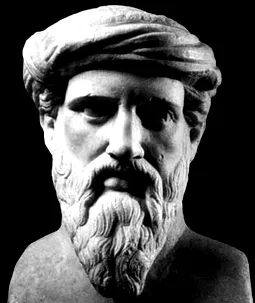

Pitágoras (582 - 504 a. C.) foi um matemático e filósofo grego. Autor do "Teorema de Pitágoras": "Em um triangulo retângulo, o quadrado da hipotenusa é igual à soma dos quadrados dos catetos". Desenvolveu trabalhos na área da filosofia, música, moral, geografia e medicina. Deve-se a Pitágoras a criação da irmandade pitagórica, de natureza religiosa, cujos princípios teóricos influenciaram o pensamento de Platão e Aristóteles.
